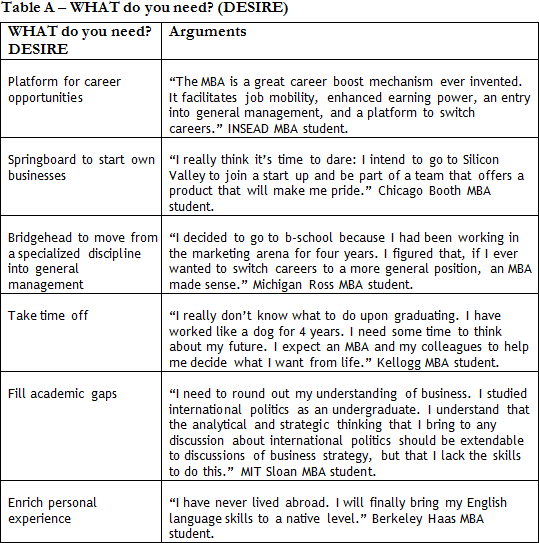
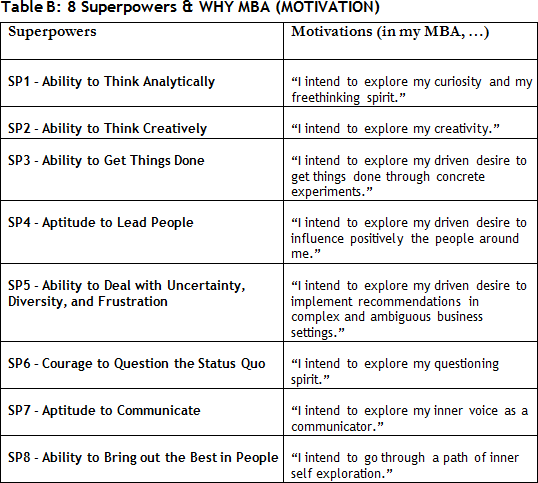
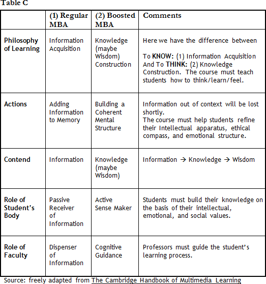
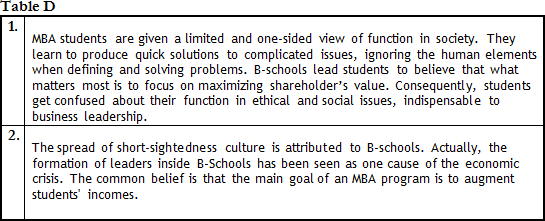

In certain way I found their answers too…hum… hum… sophisticated. I thought they would come up with… huh… more concrete reasons, I would say.


Like what?

Obviously, I wouldn’t expect anyone to say “look I need an MBA, because I am in a dead-end career path.” Don’t know... wouldn’t they say they’re after a career shift? I thought most would simply say that they need an MBA to broaden their professional horizons. Just that.
Most people seek an MBA in hopes that they can maximize their potential. A large number of MBA students are looking for a career shift. Some Directors of Admission recognize that more than half of MBAs intend to do some kind of career change (industry, function, or geography). And…
Sorry for interrupting, but I thought another answer would go as “look, man, it’s more than the opportunity to boost my career, you know, the MBA course will offer me the opportunity to live abroad, to enjoy a memorable personal experience, etc.” And... You know…I bet some like me would say that they want to fill their gap academic wise. Many like me have probably never sat in a financial class in their lives.
Yes, this issue is always raised. But, observe…
Well, sorry for interrupting you, again, but, Megaron, after all, what are the most common reasons people offer to justify attending an international MBA?
You mean: “WHY do people pursue an MBA?”
Yeah.
I usually tell the WHAT and the WHY apart.
How come?
Most applicants, at least early in the process, can articulate WHAT they want, but a few can say WHY they need an MBA. Observe in the following Table A what applicants keep in mind.

But, from what I have read, the 4 Heroes do not mention, at least explicitly, any of the elements above. They discuss “Big Ideas.”
Early in their processes, applicants tend to list the reasons for an MBA with quite silly, shallow elements. The 4 Heroes ran away from that trap. They discuss WHY rather than WHAT.
Ok. I agree with you. There is a subtle difference between “WHAT I want” and “WHY I want something.”
I pointed out the distinction between WHY (MOTIVATION) and WHAT (DESIRE) when you explored your personal values.
You called my attention to this topic when I wrote my “Who Am I?” STORY.
Exactly, at that moment I asked you to go deep into the motivations (WHY’s) that stand behind your actions (WHAT’s).
I assume it will not be different now.
It won’t. Perhaps most important from day one of your MBA project is to understand that the MBA should not be faced as a MEANS but rather as a transformational JOURNEY. Naturally, those factors are a common concern and goal, but outstanding applicants are those who can show they will enjoy a transformational experience.
The same old story: “it’s all about the journey than the destination”, huh? What you are saying is that I don’t need to repeat what is naturally enclosed in the “MBA Package” (career opportunities, career shifts, personal experience, etc.)
The great majority lacks the understanding of what the program can offer. But the Admissions Committee will demand that. And you don’t want to say what 95% of the applicants would repeatedly say.
Cool. What is written above (Table A) is something that any MBA student can reach. Essentially, we are saying WHAT (DESIRE) is an MBA rather than WHY (MOTIVATION) do one.
I get it.
Nevertheless, not everyone will live a transformational MBA program.
Not always.
It is interesting that the 4 Heroes reinforced what they already do well.
How so?
The Innovator, David, for example, says he wants an MBA because he wants to know how to relate ideas well, but isn’t that something he already does well?
Yeah, but so what?
I believe that the applicant must show that he is prepared to leave his comfort zone and go after opportunities that he has not yet explored because he was unable to or because his profile does not fit them.
You’ve raised a great point. The problem is that the business school knows well what kind of opportunity it can offer its students. The admissions committee members (AdCom) are concerned about knowing WHO the candidate is.
Naturally, it seems obvious. After all, the AdCom wants to understand what the applicant has done before he starts his MBA program.
Yes, yes, all 4 Heroes simply highlighted that during their MBA they want to continue to explore the superpowers they already master. Let’s review Table B below.

I see. You are saying that it is enough to link my 3 WHY’s MBA to my 3 Superpowers.
Yes, it is a simple exercise. It is enough to say that your motivations (WHY’s) to attend the program are related to your goal of keeping a winning career upon your MBA graduating. Of course, you will “sell” that you need to improve those 3 Superpowers.
Therefore, do you mean I do not need to say that during my MBA program I will develop a Superpower that I do NOT have today?
No.
I am afraid it will sound that I do not expect to live a transformational experience through the program.
Once again: they know well all the resources they offer and what kind of student will benefit from those resources. You need to know that when you are selling your WHY MBA, you are essentially marketing yourself.
If you don’t mind, I would like to explore the motivations mentioned by some of the Heroes.
Let’s. What are your doubts?
If I understood their arguments, each of the 4 Heroes expects very different outcomes from the experience, huh?
Right.
Thomas, the Innovator, for instance, will highlight that he wants an MBA essentially because of the analytical rigor that the program offers (“I intend to explore my curiosity and my freethinking spirit.”)
Precisely, many applicants highlight the program’s academic rigor. But, you know, Nicholas: “EDUCATION is more than an exercise of analytical nature”.
I understand that statement. If the MBA program were all about analytical tasks, why would I waste two years at a b-school? I could attend a local graduate course or, perhaps even learn through books. Relax, I won’t make this mistake.
But, please understand that this is a quite common mistake. When the interviewer asks for the reasons to pursue an MBA, the applicant will list a series of initiatives of the program, solely under the “analytical” aspect.
They probably keep mentioning names of courses and of famous professors, huh?
Once again, whoever makes that kind of mistake does not understand the impact that an MBA can cause on his/her life. The applicant does not know what a true LEARNING PROCESS should be like. Check the Table C below:

What you mean is that students cannot say that they will find and get information in their MBA program.
Observe this excerpt from Consilience, E. O. Wilson’s book:
“Profession-bent students should be helped to understand that in the twenty-first century the world will not be run by those who possess mere information alone. Thanks to science and technology, access to factual knowledge of all kinds is rising exponentially while dropping in unit cost. It is destined to become global and democratic. Soon it will be available everywhere on television and computer screens. What then? The answer is clear: synthesis. We are drowning in information, while starving for wisdom. The world henceforth will be run by synthesizers, people able to put together the right information at the right time, think critically about it, and make important choices wisely.”(E. O. Wilson)
I get it. It is what you’ve been exhaustively repeating: ANALYSIS is important, but it is not the most important.
If I were to summarize what you must look for in an MBA, I would say, “I am MBA Candidate, I am, in essence, an ANALYST. I have a challenge ahead: I must turn myself into a SYNTHESIZER, and the MBA will help me achieve this goal.”
I think the school also feels challenged to offer a learning environment that favors SYNTHESES over ANALYSES, right?
There is major criticism to the MBA programs. B-Schools need more interdisciplinary studies. They must for example, combine history, psychology, and neuroscience in order to teach strategic intuition. B-schools should develop leaders well-acquainted with several disciplines.
Sure. A reasonable concern, huh? It’s not an easy call. David is looking for such experience…
The question is: can you deal with change and complexity in business without revolutionizing your way of thinking?
I have high expectations. I definitely expect the MBA to help me rethink the way I see society, environment, and economics as well.
Exactly. You know: our thinking has been designed for routine, for automation and fixed processes. Ever-present change and rising complexity in business will demand a new way to think effectively through new problems, challenges. They must be looking for critical thinkers. Many students will sell their WHY SCHOOL as: "I want to study at SCHOOL XXX because I need to learn how to use the XXX and XXX managerial tools.”
And that's it? Really?! It is naive to believe that there are ready-to-use tools for problems that are still to happen.
Agree... who would imagine Larry Page e Sergey Brin writing their application to Stanford Ph.D. and saying: "I want to study XXX and XXX so I can, three years from now, put together something called Google".
Bizarre.
Mutatis mutandis, it's what a great number of applicants write about their MBA needs?
In the end, we must show that we want "learn to learn.”
We’ll talk a lot about the way to process learning, but for now, I should highlight that you will not do an MBA just to learn techniques, models, or procedures.
Yes, I think I could do that without leaving Brazil. I’d need a bit of discipline and a lot of books. A MOOC…
Exactly. The applicant should reveal his/her intellectual curiosity. It may be illustrated in terms of passion for the pursuit of knowledge.
Yeah, it is a collection of video lectures, right?
You probably know, thus, that Fundação Lehman keeps a partnership with Khan (see). Well, just a while ago, a former student of mine, scholarship recipient from Fundação Estudar, was telling a story in which Leman meets Bill Gates, an enthusiast about Khan Academy (see).
A meeting of billionaires...
Exactly. The richer said to the poor something like: “Jorge Paulo, given the digital revolution, a college diploma loses significant part of its value.”
I hear you. And you would ask me whether I agree with Gates, right?
Yes, precisely.
Yes, the experience goes much beyond classroom. When you learn mathematics simply through classes, you will have a very limited vision of what Mathematics is like. I do not believe that mastering the basic cognitive processes like factual recall and working mechanical exercises are that important in the learning experience.
I agree with you.
Perhaps the great challenge is to use the learned concepts to help you in the definition of new problems. In that case the video library might not be useful.
And there is something else that will probably be the main subject of today’s discussion. Your learning actually comes from what happens outside the classroom.
I am not that sure about that one. It will depend on the student’s profile.
And, in the case proposed here, Laura says in her thesis thats he will attend an MBA in order to leave the MBA experience as a different lady, right? Her main goal is to question his personal values through an MBA. She’s someone who will probably write in her essays and later state in an interview: “I expect only one thing from my MBA: know myself and the people around me; know my priorities and my principles.”
Yeah.
Wow. Ok, she did a good job saying that she expects to go through a great personal transformation.
Exactly. Remember that every school likes to say that its program will be transformational.
Quite ambitious, huh?
I am lucky that some of my former students have become friends. I can guarantee that they would be able to tell you two or three stories in which they questioned the essence of their personal values. They came back as different people after their MBA.
But that is all somewhat abstract, Megaron.
What do you mean?
Everyone likes to say that the MBA will be an amazing experience because it will allow them to interact with people of different beliefs and multiple professional experiences; people coming from all parts of the world. Some heroes point out the importance of boosting the competences directly related to this transformation. But, Megaron, easier said than done, huh?
I agree, but I wonder if this very applicant will not, in the end, just blend with his Latin American friends and barbecue together at weekends?
Right. It must not be that easy to go there and have a real transforming experience, mainly under personal aspects.
Will that same candidate be able to reveal good evidence of his/her past experiences in which he/she really changed after enjoying a specific learning environment?
Ok, but saying that is easy.
It’s true, it’s easy to say it, but observe Laura. In her essays she offers good evidence that, for being open to those around her, she will have good chances of arriving at the campus with a heart/mind and leave very different at the end of her program.
I got it. He will have to prove that he will dive into an experience of personal transformation. And such evidence must permeate all her essays.
Exactly. If you’re going to sell that you’re seeking a great personal experience, you will have to show the WHY’s that support the actions you’ve taken in life.
I believe this will not be so easy for some applicants.
You are right.
They probably lack sound evidence to prove that in the past they have lived personal experiences that were truly transformational.
Precisely.
I also believe that some schools will not offer specific opportunities for the students to do some kind of self-awareness exercise…
We will talk about “WHY School Exercise” later on (Km 27), ok? But just to warm up, check the course content of the Personal Leadership Development program offered by Stanford, the famous Touchy Feely, Interpersonal Dynamics. Observe the expectation from the course:
“The focus of this course is to increase one's competencies in building more effective relationships. Learning is primarily through feedback from other group members. This course is very involving and, at times, can be quite emotional. However, this course is not a substitute for therapy; we deal more with inter-personal issues than with intra-personal ones. If you are in therapy, please talk this over with your therapist and get their advice before enrolling in this course.”
Neat, Megaron, but notice that the description emphasizes: “we deal more with inter-personal issues than with intra-personal ones.”
Well noted. Truth is both elements are related, aren’t they?
Ok, agreed. I like this: “Most alumni describe it as one of the most valuable courses they take at Stanford.”
I’ve already spoken to former students about this. Many love it; others find it pure bullshit.
Once again, the student’s profile affects the kind of experience that he will have during the course, PERIOD.
Exactly. It is always interesting to understand the major criticism to the MBA programs in general. Only by doing so you will not seem naïve to defend the values of an MBA program. Here are two of the many criticisms to the MBA – see Table D below:

Well said, huh? But, you know, many people emphasize the need to learn how to work with people that are very different from themselves.
Nicholas, you must have heard that “no one does anything on his own; I’m in favor of having partners.” How do you like this quote?
Well, you’ve known me for a while now, so you probably know that I agree. Who said that?
Jorge Paulo Lemann, who needs no introduction. I took that from ‘Como Fazer Uma Empresa Dar Certo Num País Incerto.’ In chapter 4 (‘Gente é o Maior Ativo’) he defends that his greatest merit as a businessman is his capacity to attract high-achievers people to ambitious projects.
I’m familiar with his story. In a way what he says is true, right? The so-called”3 Musketeers” (Lemann, Sicupira and Teles) have been together since the launch of Garantia brokerage firm in the 70’s.
According to him, they have been together for 40 years and yet have never discussed money.
Hum hum... not so sure about what he calls “money” (laughing), but okay. But tell me… why did you start our chat with his quote?
Well, because he shows himself as the guy who knows how to set up a group - an authentic team builder. And that is a great attribute to be revealed through the MBA application. I sent my former students the article about Lemann published by Epoca [O Legado de Lemann]. Everyone enjoyed it. It’s a bit long, but I’m sure you will like it.
Interesting. Apparently, people surrounding him have very distinct profiles.
Yeah and this movement: going from the financial market into the ‘brick and mortal’ market is a reality nowadays in Brazil. He managed to do so through GP.
Or perhaps even earlier… huh? It is also interesting that he is the pioneer in a Brazilian company’s internationalization move.
I don’t know whether he was a pioneer. Take the Odebrecht case, for example. The company went abroad in the 1970’s, when it realized that the national state would go bankrupt (early 1980’s).
Well, the fact is many tried and very few succeeded.
Megaron
You mean, move from financial market into the ‘brick and mortal’ economy? That’s true. Do you know Luiz Cezar Fernandes, one of the founders of Pactual? At the end of the 1980’s, he tried to do, mutatis mutandis, what Lemann was doing. He said: “I did not want the bank to be limited to buying and selling papers.” Observe the result. [See PDF - Piauí: De Elefante a Formiga].
Sad.
Did you read his diagnostic on the failure of his ventures?
Yeah, I read what his former partner, Paulo Bilyk, founder of Rio Bravo, said: “the difference is that Cezar could not count on such people as Marcel Telles or Carlos Alberto Sicupira to support his ventures.”
So, Nicholas, if you asked me about the most important attribute to be explored in essays and recommendation letters, what would I answer?
Ops, that is a vital question. What would you say?
I’d mention something that few people enjoy writing or talking about. Or perhaps they are not prepared to explore that in essays or interviews.
Sure. It really matters to understand the learning styles preferred by each applicant. If people are different, and they are, I believe they must know how to defend their favorite learning environment.
Nicholas, every good teacher knows that students each have a different way to acquire knowledge. Some will learn from books, others from people.
I get that. Some will learn through extensive practice. Some heroes said that when they wrote that they need an MBA to develop “SP3 - Ability to Get Things Done.”
Right, Nicholas, today’s students enjoy experiential education, “Learning Through Experience.” Increasingly, students will earn a business degree only when they have spent some time creating — helping real businesses begin initiatives, advising business owners on their decisions, and even working to launch their own companies.
Theories do not exist in the vacuum. They must eventually be applied to the real world situations. I really expect to apply abstract concepts in real world settings and to prepare myself to take action after graduation.
Experiential activities are a required part of most MBA coursework. Numerous out-of-classroom opportunities will enable you to build upon your skill set. These include team challenges and competitions within a class, courses dedicated to experiential learning field work, business team competitions, leadership retreats, conferences, workshops, and series of lectures.
Igor, the Doer, also highlighted this element.
We are going much beyond what you need in order to do your exercise. Enough talking: roll up your sleeves and get to work. As you’ve done in every Km, now you must go to Action Plan Km 25.
OK, I will read it right now. But the task seems to be quite simple.
It is. You just need to recall the 3 Competences you picked out of the 8 that helped tell your 3 STORIES.
Oh, sure, the 3 STORIES from the Big Synthesis.
Yes, but remember there is still time to change your sale. Go back regularly to your 3 STORIES. Are they really the 3 best Competences to be sold in your essays?
Ok, we are still in the exploratory phase of my Megaron Marathon.
Exactly.
Relax, I have already printed my 3 STORIES; they are on my bedside table. I will read it again before I go to sleep.
Excellent.
And what will you do then?
You will do the Why School X. You have explained why you want to do an MBA. Now you will explain why X or Y School.
Wish me luck.
Keep Running, Nicholas.